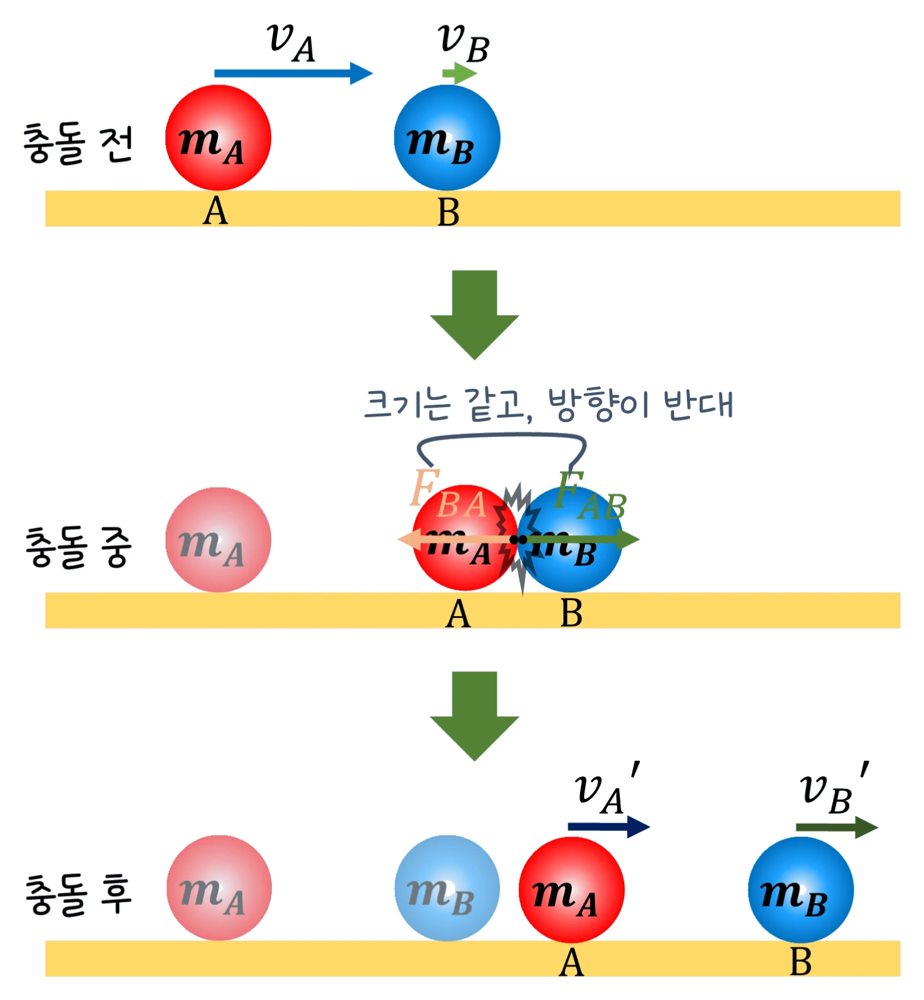

대학 일반물리 실험 1 · 8주차 · 운동량과 충돌
실험에서 정지한 수레 B에 수레 A를 부딪치며 두 수레 질량(1·2·4 kg), 반발 계수 e(1·0.5·0), A의 처음 속도(1~4 m/s)를 바꿔 충돌 후 속도, 운동량, 운동 에너지 손실을 기록했습니다. 모든 충돌에서 운동량은 충돌 전후가 같았지만, 같은 질량에서 에너지 손실은 e = 1일 때 0 %, 0.5일 때 37.5 %, 0일 때 50 %였습니다. 충격량과 운동량 보존, 충돌의 분류, 질량 중심을 정리합니다.
실험 데이터 되짚기
실험 안내: 수레 A·B의 질량 버튼(1·2·4 kg), 반발 계수 e 버튼(1·0.5·0), A의 처음 속도 v 슬라이더(1~4 m/s)를 정하고 충돌시키기를 누르면 mA·mB·e·vA′·vB′·운동량 전/후·K 손실이 자동 기록됩니다. 반발 계수 세 가지와 질량 비를 바꿔 4개 이상 기록하면 ✅ 데이터 검증 탭에 운동량 전후 그래프와 에너지 손실(측정 vs 이론) 그래프가 나옵니다.
| mA (kg) | mB (kg) | e | vA′ (m/s) | vB′ (m/s) | p 전/후 (kg·m/s) | K 손실 |
|---|---|---|---|---|---|---|
| 1 | 1 | 1 | 0.00 | +2.00 | 2.00/2.00 | 0.0 % |
| 1 | 1 | 0.5 | +0.50 | +1.50 | 2.00/2.00 | 37.5 % |
| 1 | 1 | 0 | +1.00 | +1.00 | 2.00/2.00 | 50.0 % |
| 2 | 1 | 1 | +0.67 | +2.67 | 4.00/4.00 | 0.0 % |
| 1 | 4 | 1 | −1.20 | +0.80 | 2.00/2.00 | 0.0 % |
| 4 | 1 | 0 | +1.60 | +1.60 | 8.00/8.00 | 20.0 % |
운동량은 반발 계수와 상관없이 모든 충돌에서 보존되었습니다. 운동 에너지 손실은 (1 − e²)·mB/(mA + mB)와 정확히 같아, 질량이 같을 때 완전 비탄성이면 절반(50 %)을, 무거운 A가 가벼운 B에 붙으면 20 %만 잃었습니다. 질량이 같은 탄성 충돌은 속도가 서로 바뀌고, 가벼운 A가 무거운 B에 부딪치면 튕겨 나옵니다(−1.20 m/s).
J = ∫F dt = Δp. 충돌하는 동안 A가 받는 충격량과 B가 받는 충격량은 크기가 같고 방향이 반대(제3법칙) → mAvA + mBvB 일정.
반발 계수 e = (분리 속력)/(접근 속력) 을 쓰면
vA' = (mA − e mB)v / (mA+mB), vB' = (1+e) mA v / (mA+mB)
교재 그림
충돌하는 동안 서로 주고받는 힘

충돌하는 동안 A가 B를 미는 힘과 B가 A를 미는 힘은 크기가 같고 방향이 반대이며 작용 시간도 같습니다. 그래서 두 물체가 받는 충격량은 크기가 같고 방향이 반대라 운동량의 합이 보존됩니다.
움직여 보기
수레 충돌 — 운동량은 그대로, 운동 에너지는?
빨강 = A, 파랑 = B. 운동량 막대의 합(전체 길이)은 충돌 전후로 같고, 운동 에너지는 e가 작을수록 많이 줄어듭니다(같은 질량, e = 0이면 50 %). 보라 삼각형(질량 중심)은 충돌과 상관없이 같은 빠르기로 움직입니다. 표 1의 조합을 그대로 넣어 보세요. (마찰 없음, 1초 뒤 충돌)
vcm = Σm v / Σm = p전체/M. 외력이 0이면 vcm은 충돌과 상관없이 일정합니다.
· 실제 트랙에는 약한 마찰이 있고, 반발 계수는 충돌 속력에 따라 조금 변합니다.
· 2차원 충돌은 성분마다 운동량 보존을 적용합니다.
M = mA + mB, e = 분리 속력/접근 속력 · 1 kg + 1 kg, e = 0, v 2 m/s → 손실 50 %
vA′ = (1 − 0.5 × 2) × 3 ÷ 3 = 0 m/s, vB′ = 1.5 × 1 × 3 ÷ 3 = 1.50 m/s. 운동량 3.00 → 2 × 1.50 = 3.00 보존. K 4.50 → 2.25 J, 손실 (1 − 0.25) × 2/3 = 50 %.
vcm = 2 × 2 ÷ 3 ≈ 1.33 m/s. 충돌 후 (2 × 0.667 + 1 × 2.667) ÷ 3 = 4.00 ÷ 3 ≈ 1.33 m/s로 같습니다. 외력이 0이면 vcm은 충돌과 상관없이 일정합니다.